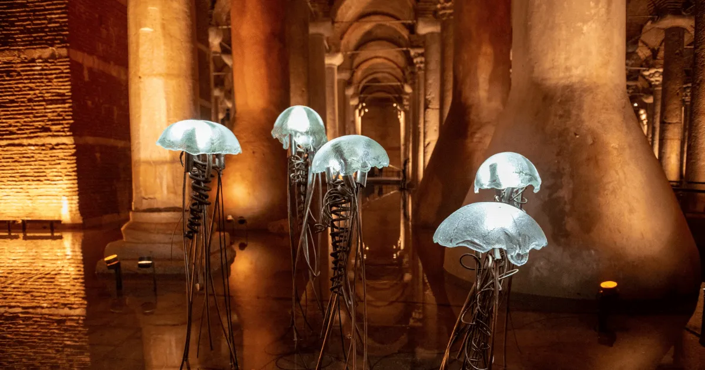

Basilica Cistern already feels theatrical during the day. The separate Night Shift turns the same columns, reflections and underground acoustics into an evening experience, but it costs more and follows its own ticket window.
Quick answer
Official 2026 information lists Basilica Cistern Night Shift daily from 19:30 to 22:00. The announced foreign visitor price is 3,000 TL, compared with 1,950 TL for daytime entry. Choose Night Shift for atmosphere and an evening plan; choose daytime for the lower price and the easiest first-time itinerary.
Basilica Cistern Night Shift Hours
The regular attraction is open daily from 09:00 to 22:00. The official ticket announcement separates the day into two visitor products:
- Daytime entry: 09:00–18:30
- Night Shift: 19:30–22:00
That leaves a transition period between daytime admission and Night Shift. Check the official site on the day of your visit because special events or maintenance can affect entry.
2026 Night Shift Ticket Price
The announced foreign visitor price is 3,000 TL for Night Shift and 1,950 TL during daytime hours. Children under seven are listed as free with valid identification.
These are official entrance figures, not the price of third-party fast-track or audio products. See our Basilica Cistern ticket price comparison before choosing.
Daytime vs. Night Shift
| Choose | Daytime | Night Shift |
|---|---|---|
| Hours | 09:00–18:30 ticket window | 19:30–22:00 |
| Foreign price | 1,950 TL | 3,000 TL |
| Best for | First-time routes and value | Evening atmosphere |
| Planning | Easy after Hagia Sophia | Separate evening slot |
Is the Evening Visit Worth It?
Night Shift is most appealing if you enjoy dramatic lighting, want to keep the daytime free for mosques and palaces, or prefer to finish your Old City day underground. It is not automatically less crowded; attendance varies by date, season and events.
Daytime remains the stronger default for most first-time visitors because it is cheaper and fits naturally after Hagia Sophia. If you have already seen the main Old City sights or want a distinctive evening plan, Night Shift offers the more unusual experience.
Evening Photo Tips
- Use night mode or stabilize your phone against your body.
- Avoid flash; it flattens the warm lighting and can disturb other visitors.
- Expose for the illuminated columns so reflections do not become too bright.
- Leave space at the Medusa heads and wait for a clear moment.
For the history and location of the carvings, use our Medusa heads visitor guide.
How To Plan the Day
A practical full-day route is Hagia Sophia in the morning, Blue Mosque and Topkapi Palace during the day, dinner in Sultanahmet, then Basilica Cistern Night Shift after 19:30. If you prefer a shorter route, visit Hagia Sophia late afternoon and leave enough time for the transition before the evening program.
For a daytime two-stop plan, follow the 5–7 minute walking route from Hagia Sophia.
Ticket Options
Official Night Shift is a separately priced on-site program. The fast-track smartphone audio option featured below may use different availability and entry conditions, so check the selected date and product details before paying.

Fast-Track Entry + Multilingual Audio
Compare current times, final price and inclusions for your date. Third-party availability can differ from official Night Shift entry.
FAQ
What time is Night Shift?
Official 2026 information lists Night Shift daily from 19:30 to 22:00.
How much is Night Shift?
The announced foreign visitor price is 3,000 TL. Daytime foreign entry is 1,950 TL.
Is it better than daytime?
Night Shift is better for atmosphere; daytime is better for price and an easy first-time itinerary.
Will it be less crowded?
Not necessarily. Crowd levels vary, so an evening ticket should not be presented as a guarantee of fewer visitors.